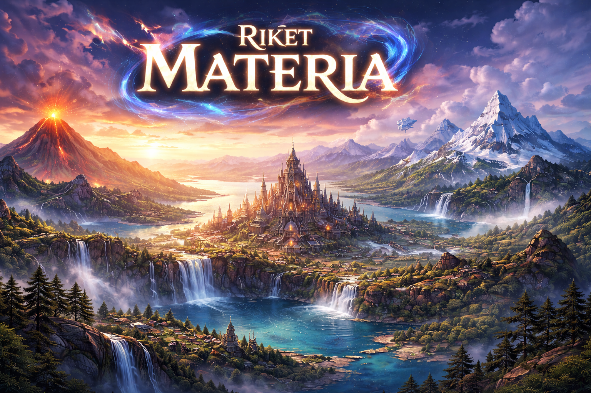

Resan mot Materias Hjärta

Mörkret har lagt sig över riket Materia. Den Stora Smedjan har slocknat och världen håller på att lösas upp.
Du är den utvalda lärlingen som måste resa genom de fyra rikena för att återuppväcka smältugnarna.
Du har tre magiska sköldar. Om de krossas blir du kvar i glömskan för evigt.
Vulkanbron
Du har svarat rätt – men bron tänker inte släppa förbi dig gratis.
Hoppa över blocken, undvik fällorna och ta dig till porten på andra sidan.